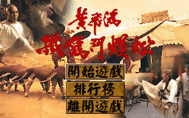
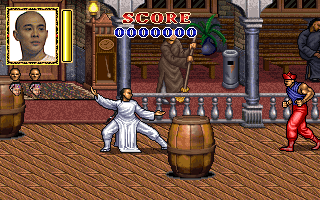

名稱：黃飛鴻：鐵雞鬥蜈蚣／黃飛鴻之鐵雞鬥蜈蚣 (中文版)
簡介：歡樂盒1995年出品的動作打鬥遊戲，雖然遊戲頗類似於捲軸式打鬥過關的動作遊戲，
但這個遊戲並非以走動方式清完一區又一區的敵人，而是固定清完畫面左右不斷湧現
的敵人，有點像是打擂臺似的。也由於採用這種形式，使得遊戲變成不斷的在打敵人，
少掉了前進探索取物的樂趣。另外，遊戲中的攻擊招數太少，操控上也不是很順，面
對敵人圍攻時，往往很快就陣亡，雖然有限制次數的接關，但玩起來還是會感到相當
無趣，不如挑其他遊戲來玩還比較好些。


保護：光碟，破解碼：
LASTHERO.EXE
75 15 68 61 05
EB -- -- -- --
操作：Space = 攻擊
Ctrl+Space = 氣功（會損血）
Enter = 無影腳（會損血）
上+Shift = 跳躍
Ctrl+Alt = 呼叫幫手